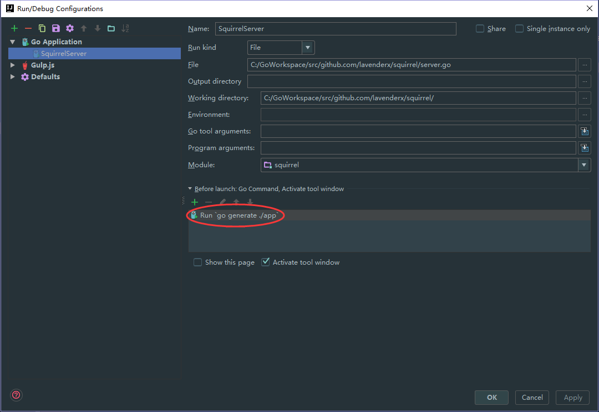
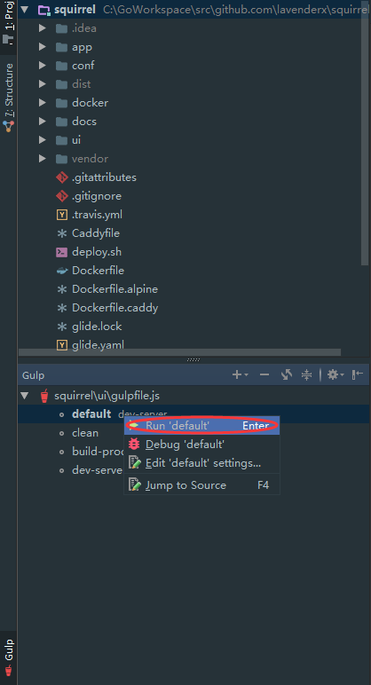

Squirrel 

A modern Golang web application scaffold, Echo for building RESTful API and Vue.js for the view.
Quick Start
Starting Server

Starting UI

Deploying to Docker
Make sure you have Go, Glide, go.rice, and Node.js installed.
You can see deploy.sh for the details.